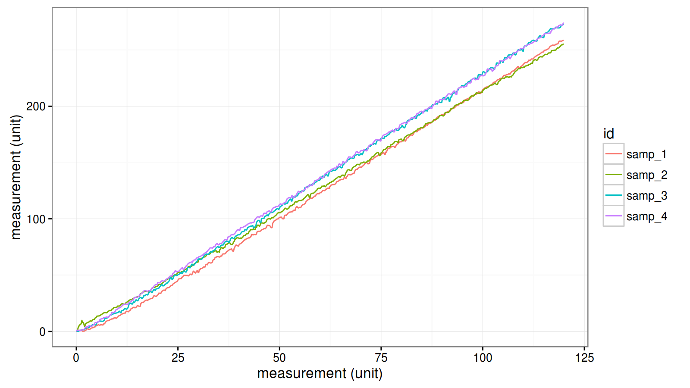

R + Org-mode = awesome!
Org-mode for science, reproducible research, organization
Background
I work in product development at 3M. I'd like to say my job consists of coming up with ideas, trying things out, collecting and analyzing data, using that knowledge for the next iteration, and eventually launching a finished product. Those steps are certainly involved, but my life also involves a hefty dose of meetings, emails and phone calls, keeping track of various bits of information, compliance courses, lots of todos/deadlines, volunteering activities, and other general miscellany.
It might not seem like a big deal, but as I tried various applications, I simply found that I disliked storing notes, todos, contacts, data, code, etc. in separate formats and locations. To date, I'm unaware of another solution that lets you do what Org-mode can do, which is what I'd like to introduce here!
- General notes/information organization
- Todos and planning (scheuling/deadlines/states)
- Export to html, pdf (LaTeX/Beamer), markdown, open document formats, and more
- Numerous supported programming languages (R, python, bash, gnuplot, among others)
- Citations/references
- Inserting code results (both blocks and inline code)
- Inserting images into exported documents
- Even using code to print out Org-mode syntax, thus allowing programmatically generated document structures (say a headline per some repeated systematic analysis)
These features extremely well for those working in technical/scientific fields, as well as enabling literate programming and reproducible research. Just so it's clear, I'm certainly not the first to discover or present this. There's an excellent article about Org-mode for reproducible research written by various Org-mode contributors, as well as an example of such work by Thomas Dye.1 , 2
This document
I wrote this to serve as a quick demo of Org-mode features for a live demonstration at the
Twin Cities R User Group (TCRUG). I re-created a minimal version of my ~/.emacs config
file in an effort to make it easier for newer users to dive in. From there, I simply
created some quick examples and notes on some of the various Org-mode features. This file
is meant to serve as a living Org-mode tutorial. You can see the code, options, and
markup that relate to each feature and actually try them out. And don't worry, there's a
backup version, demo-backup.org, so feel free to play around!
Basic features I use
Shortcuts are defined in Emacs like this: C-x (Ctrl+x) and M-x (alt+x). They can be
strung together and interspersed with other text like this: M-x org-mode RET would mean
"press alt+x, type 'org-mode' and press the enter key."
The short list of super basic emacs shortcuts you might be lost without:
C-x C-f: open a fileC-x C-s: save fileC-g: when there's a message in that little line way at the bottom (called the minibuffer) and you can't make it shut up/stop/go awayC-x u: undo
Headings are defined by one or more asterisks at the start of a line in Org-mode:
Sub-heading 1
Sub-heading 2
Sub-heading 3
lists
- item 1
- item 2
- item 3
You can move headings/items up and down with M-up/down; you can promote/demote with
M-left/right. Alt-RET starts a new heading/list of the same type you're cursor is
currently on. Ctrl-RET starts a new heading at the same level of the one you're in.
You can insert todos using a heading and any defined keyword (in this case, next, todo,
wait, cancelled, and done):
todo something
wait waiting on info from someone
cancelled didn't work out
done good to check that off
shift-left/right will cycle through the order of the defined todo states. C-s and
C-d add scheduled or deadline dates (when you plan/need to do the work).
You can also use checkboxes with items, including tracking totals via a higher up headline:
todo [2/4] a bunch of things
[ ]checkbox item 1[X]checkbox item 2[ ]checkbox item 3[X]checkbox item 4
Inline headings are like "notes to self" in Org-mode. They can plop right in the middle of text you're typing and don't show up in any exports. Agenda mode will still extract them, so I find it helpful for inserting action items during meetings since I can always find them. I also like this, as the todo stays more proximate to the context in which it occurred.
Dates are often helpful, and I use time stamps quite frequently. They're a quick way to insert an update to notes or an action item. Since my work is often spread over days or longer, it's also nice from a reference point of view to see the flow of the progress on something.
I tend to use the above with C-!; it inserts an inactive time stamp, meaning there's no
action necessarily associated with it. It's just sitting there as a reference for when I
wrote this. Shift-up/down adjusts whichever entity you're on (year, month, day) and
Shift-left/right cycles by day no matter where the cursor is.
To make finding things easier, you can add tags to Org-mode headings. These help with targeted exports, searching, and in agenda.
project 1 proj_1
todo task 1
todo task 2
project 2 proj_2
todo task 1
todo task 2
Agenda
The easiest way to use agenda to start is on this file. Go before the first headline and
do C-u M-x org-agenda-set-restriction-lock.3 This will set agenda mode to only look at
this file. After that, run it with C-c a.
You can choose from the various options which bring up default views (like filters). You can also write your own to show, for example, a dashboard of only today's action items.
The m option is quite handy for matching defined tags or dates (if you know what you're
looking for). I use C-a s (search) far more. It brings up a list of hits for a keyword
for each instance in your agenda files.
Some extra stuff
Sometimes I get test data from a lab assistant who uses various file naming schemes. I've
come to love Sunrise Commander to edit these quickly in Emacs with things like regex and
rectangle operations.
Speaking of rectangles, these can be really handy in tables and whatnot.
| Mfg | Type | Grade | Yield % |
|---|---|---|---|
| Dow | PP | A | 5 |
| Dow | PE | B | 7 |
| Dow | PE | C | 7 |
| Lyondell | LDPE | 1 | 13 |
| Lyondell | LDPE | 2 | 14 |
| Lyondell | LDPE | 3 | 16 |
Org-mode also has a neat interface for entering things quickly called capture. I have it
bound to C-c c, which brings up some options for what I want to capture. It's really
nice for quickly entering a bunch of todos, which are filed into a location of your
choosing.
You can track your time with clocking by going to a headline and doing C-c C-x i/o to
clock in/out. You can insert a clock table with M-x org-clock-report. Update it with
C-c C-c.
| Headline | Time | |
|---|---|---|
| Total time | 3:14 | |
| todos | 3:14 | |
| done create content | 1:43 | |
| done migrate/anonymize example data set | 0:24 | |
| todo get beamer/slidify/reveal working | 1:07 |
If you're a gantt chart person, I'd suggest looking at taskjuggler, a ruby-based project management application (time lines, resources, estimates). Org-mode has an export backend for it.
Every now and then, I draw some diagrams with TikZ. It's a bit verbose, but you can do some really neat things with it. Here's an example for drawing how multi-angle color quantifying cameras work:
\begin{tikzpicture}[scale = 1.5] \draw[ultra thick] (0, 0) node[above, anchor = south west] {surface} -- (8, 0) ; \draw[dashed, ultra thick, ->, blue] (1, 3) -- (4, 0) node[black, near start, above, sloped] {light path} -- (7, 3); \draw[thick] (0:4) -- node[above, near end, above, sloped] {\(15^o\)} +(60:3); \draw[thick] (4, 0) -- node[above, midway, above, sloped] {\(25^o\)} +(70:3); \draw[thick] (4, 0) -- node[above, midway, above, sloped] {\(45^o\)} +(90:3); \draw[thick] (4, 0) -- node[above, midway, above, sloped] {\(75^o\)} +(120:3); \draw[thick] (4, 0) -- node[above, midway, above, sloped] {\(110^o\)} +(155:3); \draw[thick] (4, 0) -- node[above, midway, above, sloped] {\(-15^o\)} +(30:3); \end{tikzpicture}
I don't use it to full force, but there's a contributed Org-mode package for managing
contacts. It stores details in a property drawer (added with C-c C-x p) like this:
Henderson, John
Email: jw.hendy@gmail.com Company: 3M
You can integrate this with gnus, and email mode for Emacs. I have quite a bit of
trouble with this due to the work firewall, so I've not gone that far… though I'd love to
handle my emails in Emacs! I often copy/paste snippets from eamils into an Org-mode
journal tree so I don't have to keep things in my inbox anyway.
Example analysis
For the last section, I want to go through how I typically set up experimental data analyses, as well as commenting on some of the code-related features. My analyses are typically on project-specific data as the result of some test or set of experiments. If it's really quick, I'll just write things up in my main notes file and, if needed, export just the subtree (we'll get to that).
If the experiment warrants some more serious analysis and a writeup/presentation, I'll often create a dedicated folder for it. My structure tends to look like this:
tree --dirsfirst
. ├── data ├── img ├── plots └── demo_article.org 3 directories, 1 file
Lately, I've been going through data from the same machine on different samples, which can generate an awful lot of files. My preference has been to create a master file with ids/data/file names of the samples, and then read the raw data into a list based on that file.
I typically use an initial block, set not to export, to do the preliminary
read-in/processing. This way, I run it once and then set to :eval no so it doesn't
re-run each export (the results are already in the R session).
Experimental results
From here, I often generate a "prettier" plot for use in my report or presentation. I also
noticed an issue with samp_1_1 when I generated it, so I'd opt to prune it as I think the
test data is suspect.
To use :results output graphics, you have to specify an output file with :file. You
can keep lines shorter by adding as many #+header: lines as you want (which supplements
the options passed after #+begin_src. You need a #+name for the code block so that if
you change code and re-run, Org-mode knows to update the original results block vs. adding
one each time you execute.
You can add backend-specific formatting options to the results. Here is the default generate Org-mode code to include results:
#+RESULTS: rate-compare [[file:./plots/rate-comparison.png]]
For PDF, I typically center and adjust size as desired:
#+begin_center #+caption: Rate comparison of samples 1-4 #+attr_latex: :width 0.9\textwidth #+attr_html: :width 75% #+RESULTS: rate-compare [[file:./plots/rate-comparison.png]] #+end_center

Figure 1: Rate comparison of samples 1-4
I also quite enjoy the ascii package, as it has a mode to turn a data frame into
Org-mode table format:
stats <- stats[stats$grp != "samp_1_1", ] stat_table <- ascii(stats, include.rownames = F, rownames = rep("", 6), colnames = names(stats)) print(stat_table)
| id | rep | grp | xmax | ymax | rate | delta |
|---|---|---|---|---|---|---|
| samp1 | 2.00 | samp12 | 119.88 | 258.82 | 2.16 | 13.02 |
| samp2 | 1.00 | samp21 | 119.90 | 255.33 | 2.13 | 16.23 |
| samp3 | 1.00 | samp31 | 119.90 | 272.75 | 2.27 | 1.22 |
| samp4 | 1.00 | samp41 | 119.90 | 274.27 | 2.29 | 0.00 |
You can have R spit out Org-mode syntax as well, which is nice for repetitive
operations. You could process numerous text files and create a headline for each one. I
used this to input a .csv with budget data for 3M groups, outputting a reference cheat
sheet with account numbers and the next year's budget for each group chair in a separate
subtree. It's a little tedious (lots of cat() lines), but for ~40 groups, it was well
worth it.
Conclusion
That's it for the quick demo. You can copy these code blocks or results to any other
Org-mode file, which I find particularly useful when writing up a larger report but
needing to present a synopsis at a team meeting, for example. With thoughful path
definitions (or just going with absolute paths), you can often copy these with very
minimal adjustments (usually only the :width or :height options to the graphic, which
I'll often change with M-x replace-string.
While this was R focused, Org-mode supports a lot of languages. I like that you can
intersperse them freely, and hand off data (or save to .csv with one, then
process/analyze with another). I've just started getting into python, and would like to
save myself a step by having Org-mode house my sensor reading and my processing/plotting
rather than having them be separate steps.
Footnotes:
Schulte, Eric; Davison, Dan; Dye, Thomas S; Dominik, Carsten. A Multi-Language Computing Environment for Literate Programming and Reproducible Research. Journal of Statistical Software. http://www.jstatsoft.org/article/view/v046i03
Dye, Thomas S. Structure and Growth of the Leeward Kohala Field System: An Analysis with Directed Graphs. PlosONE. http://journals.plos.org/plosone/article?id=10.1371/journal.pone.0102431